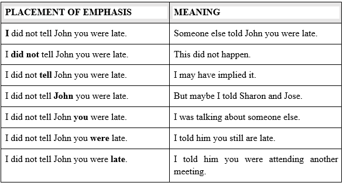

Definition of communication
Communication is the process of sending and receiving messages through verbal or nonverbal means, including speech, or oral communication; writing and graphical representations (such as infographics, maps, and charts); and signs, signals, and behavior. More simply, communication is said to be "the creation and exchange of meaning".
Media critic and theorist James Carey defined communication as "a symbolic process whereby reality is produced, maintained, repaired and transformed" in his 1992 book "Communication as Culture," positing that we define our reality via sharing our experience with others. (carey, 1992).
Components of Communication
This are essential elements used in communication an they include the flowing
Sender:
The person who intends to convey the message with the intention of passing information and ideas to others is known as sender or communicator.
Message:
This is the subject matter of the communication. This may be an opinion, attitude, feelings, views, orders, or suggestions.
Encoding:
Since the subject matter of communication is theoretical and intangible, its further passing requires use of certain symbols such as words, actions or pictures etc. Conversion of subject matter into these symbols is the process of encoding.
Receiver:
Receiver is the person who receives the message or for whom the message is meant for. It is the receiver who tries to understand the message in the best possible manner in achieving the desired objectives.
Decoding:
The person who receives the message or symbol from the communicator tries to convert the same in such a way so that he may extract its meaning to his complete understanding.
Feedback:
Feedback is the process of ensuring that the receiver has received the message and understood in the same sense as sender meant it. (Kitos, 2013)
Channel:
The person who is interested in communicating has to choose the channel for sending the required information, ideas etc. This information is transmitted to the receiver through certain channels which may be either formal or informal.
What are Communication Channels?
Communication is the process of sending and receiving messages through verbal or nonverbal means, including speech, or oral communication; writing and graphical representations (such as infographics, maps, and charts); and signs, signals, and behavior. More simply, communication is said to be "the creation and exchange of meaning".
Media critic and theorist James Carey defined communication as "a symbolic process whereby reality is produced, maintained, repaired and transformed" in his 1992 book "Communication as Culture," positing that we define our reality via sharing our experience with others. (carey, 1992).
What are the prominent channels of communication?
Communication channels can be categorized into four principal channels:
- Verbal,
- Non-verbal
- Written
- Digital.
Verbal communication
When we think about communication, we can usually imagine two or more people talking to each other. This is the greatest aspect of verbal communication: speaking and listening. The source uses the words to encode information and speaks to the receiver, who then decodes the words for understanding and meaning. An example of interference in this channel is the choice of words. If the source is using words that the recipient does not know, it is possible that they are communicating the message incorrectly or not at all. The formality of choosing vocabulary is another aspect of the verbal channel. For example, in situations with close friends or colleagues, you can choose more individual words, as opposed to the words you would choose for a presentation you give to your supervisors. In the workplace, the main channel of communication is verbal, much of this communication is used to coordinate with others, solve problems and build collegiality.
Tone
One element of verbal communication is tone. A different tone can change the perceived meaning of a message, don’t use that tone with me! Based on Kiely, M. (1993), demonstrates just how true that is. If we simply read these words without the added emphasis, we would be left to wonder, but the emphasis shows us how the tone conveys a great deal of information. Now you can see how changing one’s tone of voice can incite or defuse a misunderstanding.

Non-Verbal Communication Channel
What you say is an essential part of any communication, but what you don't say can be even more important. Research also shows that 55 percent of in-person communication comes from non-verbal cues, such as facial expressions, body stance, and smell. According to one study, only 7 percent of a receiver’s comprehension of a message is based on the sender’s actual words; 38 percent is based on paralanguage (the tone, pace, and volume of speech), and 55 percent is based on non-verbal cues such as body language (Mehrabian, 1981).
Research also shows that 55% of face-to-face communication comes from non-verbal cues, such as facial expressions, body position and smell. According to one study, only 7% of a recipient's understanding of a message is based on the sender's actual words; 38% are based on paralanguage (the tone, tempo and volume of speech) and 55% are based on non-verbal cues such as body language (Mehrabian, 1981).
Written Communication Channels
In contrast to verbal communications, written professional communications are textual messages. Examples of written communications include memos, proposals, emails, letters, training manuals, and operating policies. They may be printed on paper, handwritten, or appear on the screen. Normally, a verbal communication takes place in real time. Written communication, by contrast, can be constructed over a longer period of time. Written communication is often asynchronous (occurring at different times). That is, the sender can write a message that the receiver can read at any time, unlike a conversation that transpires in real time. There are exceptions, however; for example, a voicemail is a verbal message that is asynchronous. Many jobs involve some degree of writing. Luckily, it is possible to learn to write clearly (more on this in the Plain Language chapter and the writing module).
Digital Communication Channels
The three principal communication channels can be used “in the flesh” and in digital formats. Digital channels extend from face-to-face to video conferencing, from written memos to emails, and from speaking in person to using telephones. The digital channels retain many of the characteristics of the principal channels but influence different aspects of each channel in new ways. The choice between analog and digital can affect the environment, context, and interference factors in the communication process. (Juneja, 2015)
In conclusion, To sum it all up, one can use all these channels at once when communicating.